Kata Tjuta
Kata Tjuta means "Heads. Many." In the local language, "many" is defined as more than three. I have a theory. Stone Age computers had a word size of two bits, and a more accurate translation would be "one, two, three, overflow". Had my own calculation trauma: Yulara is 1/2 hour behind Sydney, and that drove me nuts. I finally had to reset my cell phone clock, because I was always paranoid about doing the calculation the wrong way.
The following pictures show color changes during sunset. Actually, the color is constantly varying during the day. The thing's a landscape painter's nightmare.
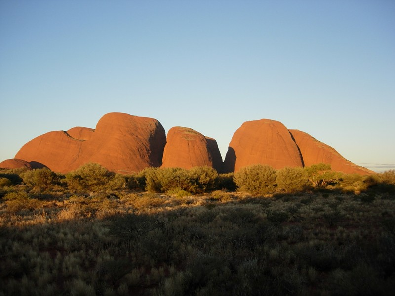
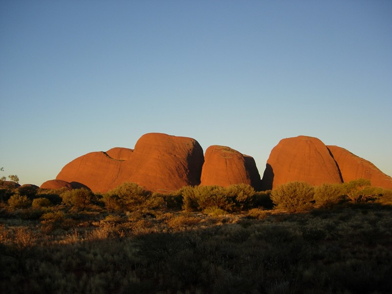
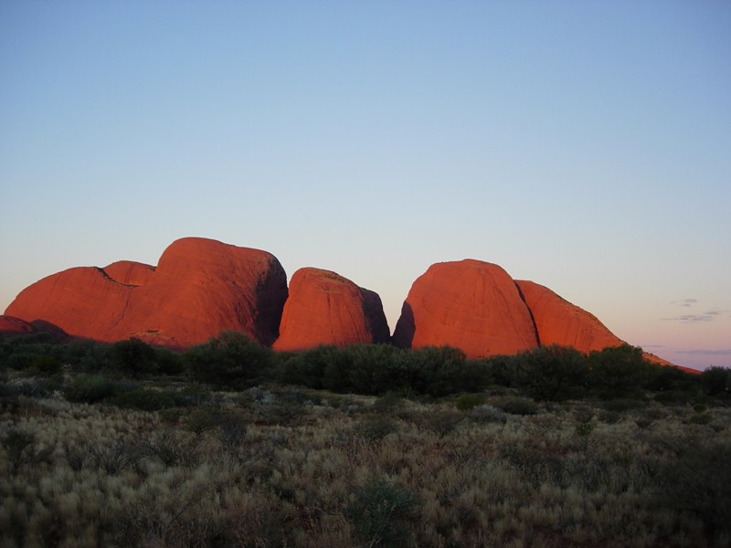
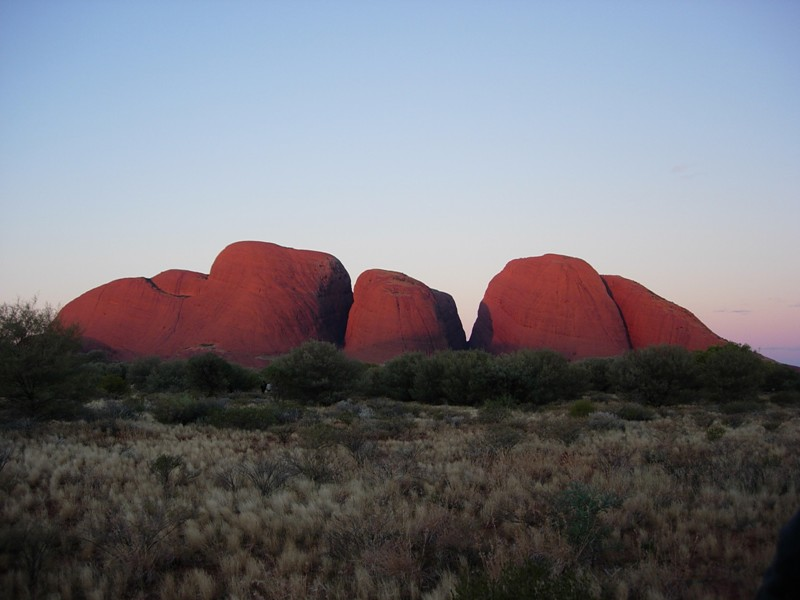
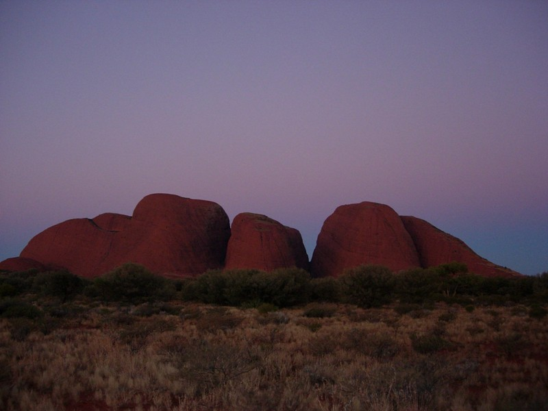
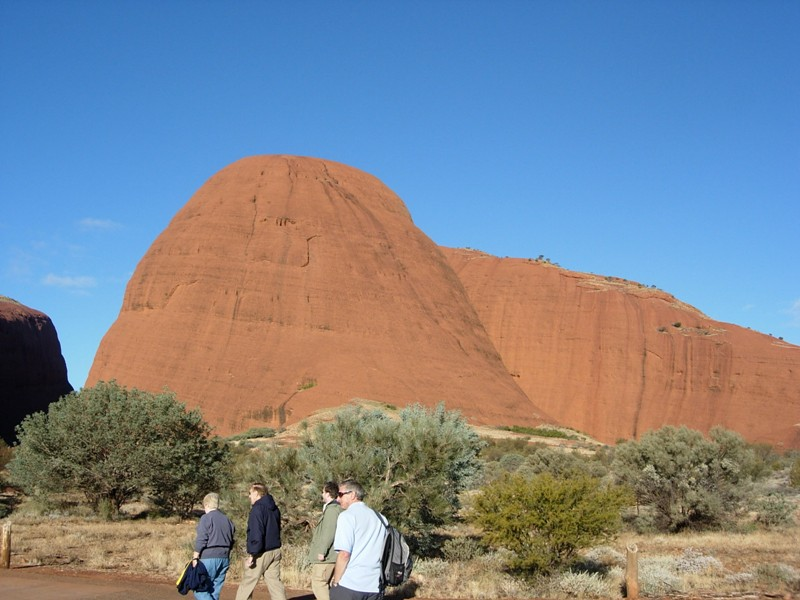
Hiked up the gap between the two main heads. The largest one is called Mt. Olga. The range is also called the Olgas. It's a composite rather than rock like Uluru. It was also formed in an alluvial wash.
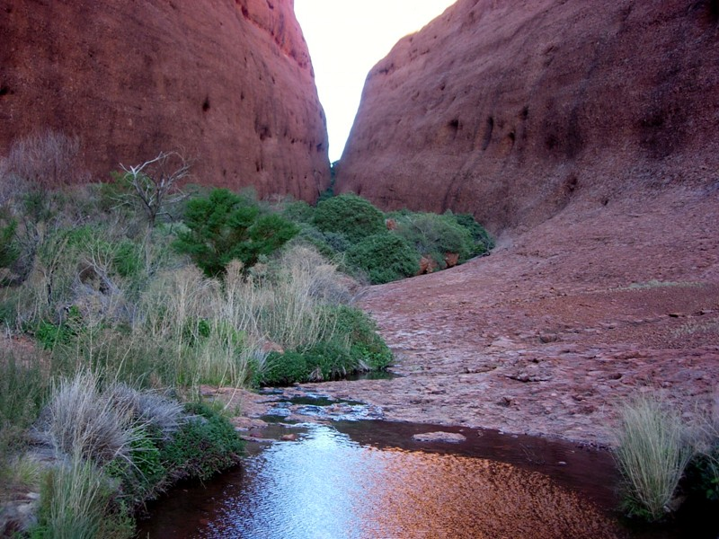
Water left over from the cold front.
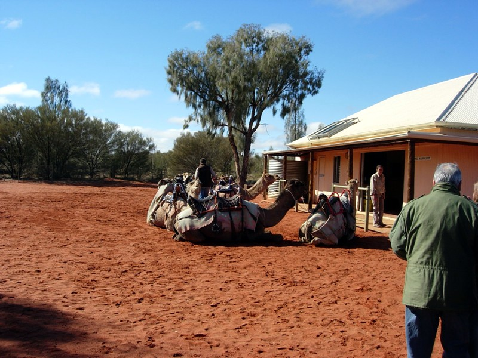
Took a camel ride later that day. Complete blast. Camels were brought over in the early 1800s. Camel trainers were also brought. To this day, their descendents live in Alice Springs 4 1/2 hours to the north, and are called Afghans, although they're actually from Rajasthan.
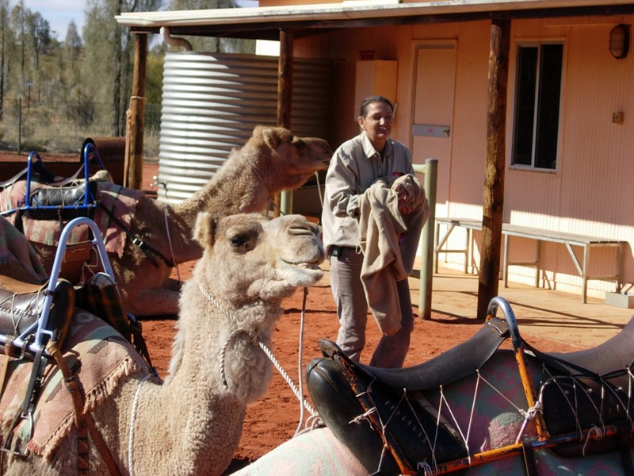
We put saddle blankets on both sides of the saddle.
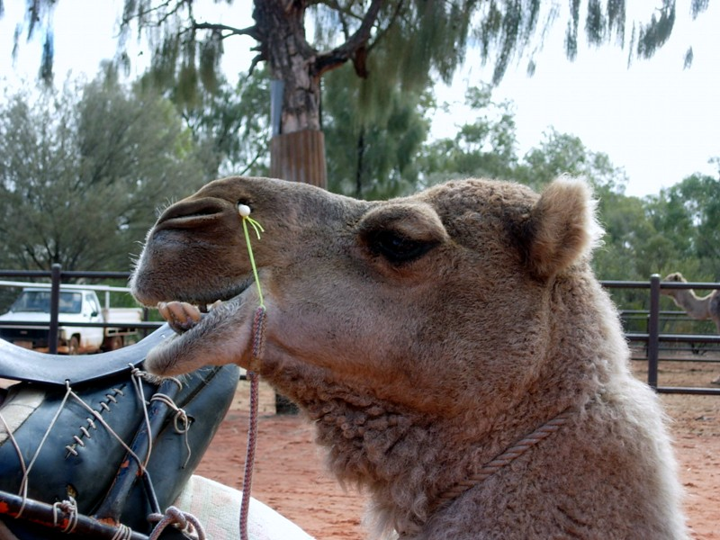
The camels are roped together by nose piercings. We were advised not to kick the "safety rope" while mounting, since our asses would be in bite range for the rest of the trip.
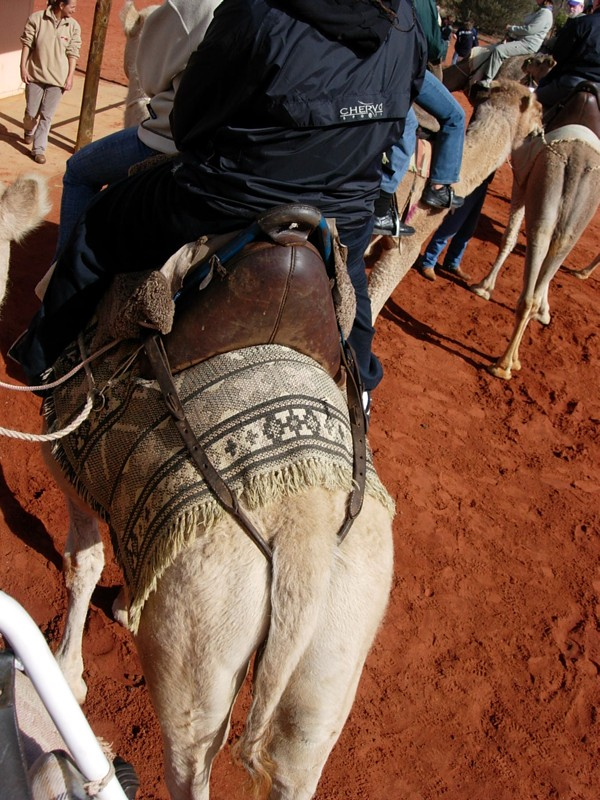
Not too comfortable on the other end, either.
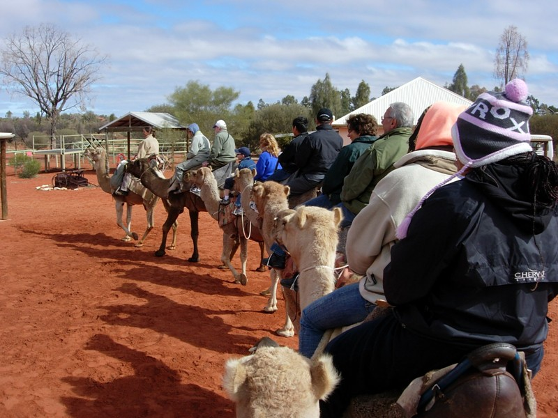
Heading out. Mounting the camels was pretty drastic. Once down, they hate to get up; once up, they hate to kneel. The approach of a rider was greeted with much snorting and groaning. Once in the saddle, you lean way back. The camel gets up on its hind legs and you pitch way forward. Then it gets up on its front legs and you pitch center again. See attached videos.
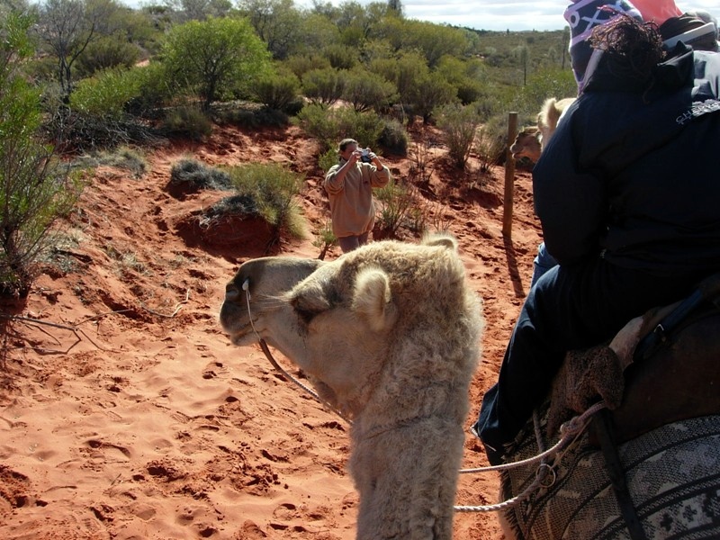
The tour did a picture stop. This is my camel, Gibbon.
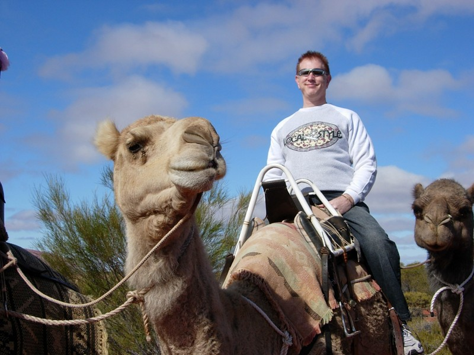
Gibbon looks like he's having as good a time as I am.
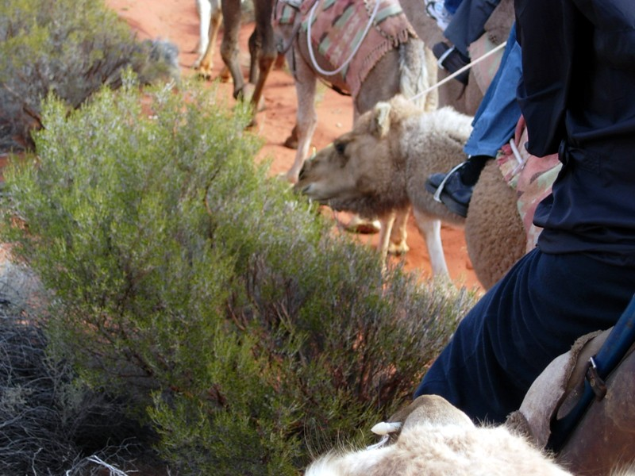
Camels are like horses: they have to do the trail ride in herd order, try to scrape you off, and lunge at any nearby edibles. Learned that saharan camels descended from south american alpaca and llamas who crossed the land bridge. In that case, where are the camels of north america?
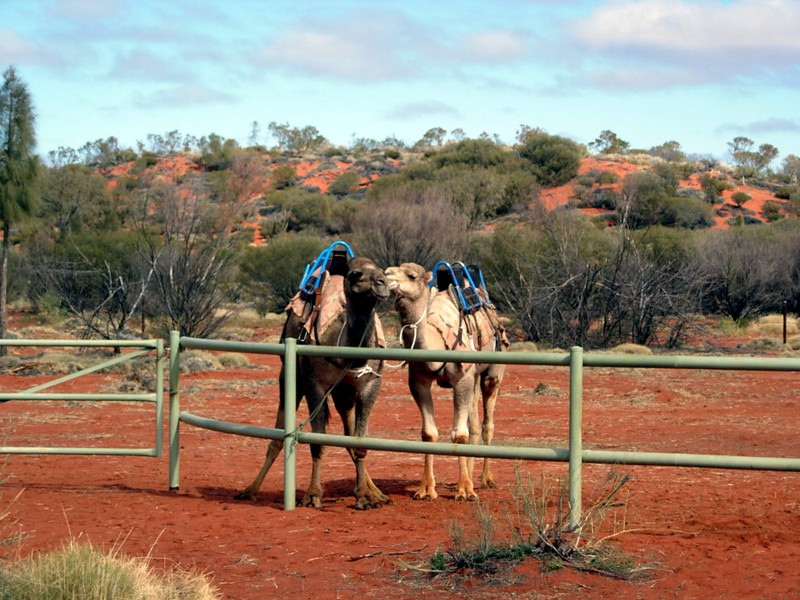
The desert felt happy and welcoming to humans--in groups of 20 or less. It feels safe, having figured out how to make civilization in general impossible, and enjoys the stimulation of small groups. It would also be happy if you died there, and ready to provide the last kiss of the mother to welcome you home.